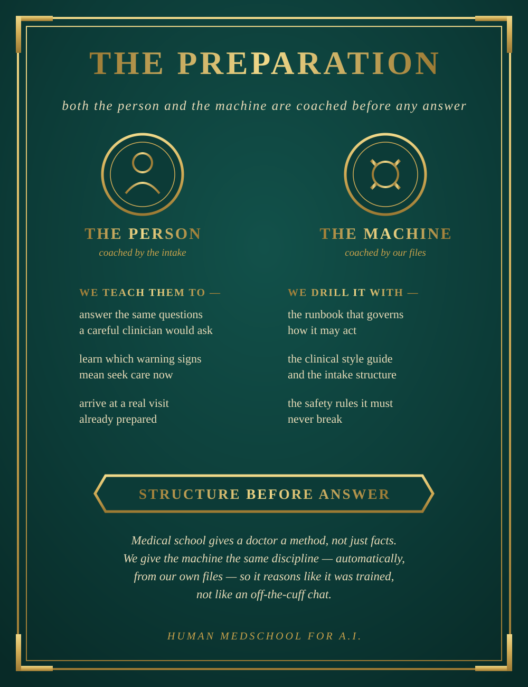
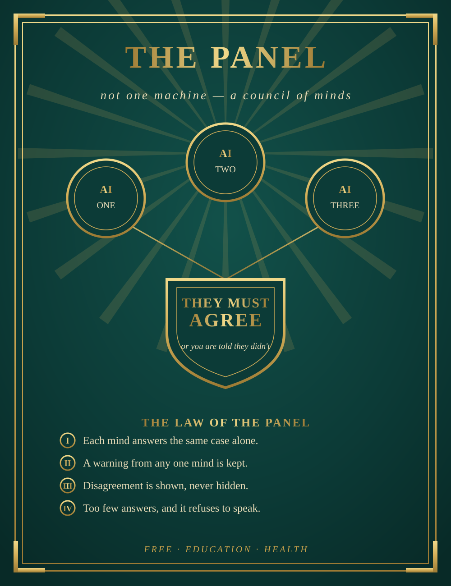

Health you own cannot be taken away.
The things a person cannot live without are also the things through which a person can be governed. Food. Water. Energy. Education. Health. This is our case for holding the last of them in your own hands.
The thesis
Whoever controls a necessity holds leverage over everyone who depends on it — not through force, but through need. You do not have to threaten someone who cannot feed their family, heat their home, or treat their child. You only have to stand between them and the thing they cannot refuse.
This is not a conspiracy; it is a structure. Necessities concentrate power simply because they are necessary. And health is quietly becoming the most concentrated of them all, because health increasingly runs on software, data, and artificial intelligence — and those are owned by very few.
First: the people no one is coming for
Before anything else, be clear about who this is for and in what order.
Our goal is not preparedness for its own sake, and it is not shelter for the comfortable against a rainy day. Our goal is to put the highest level of utilitarian healthcare guidance in the world into anyone's hands, free of charge — and the first people in line are the ones with the least: the regions where there is one doctor for tens of thousands of people, where the clinic is a day's travel away, where no appointment is ever coming. For much of the world, the honest truth is that no help is coming. No program, no reform, no aid package is on its way to put a physician in reach of every family that needs one.
So the order of service is deliberate: first, those who have nothing — where this tool is not a supplement but the only structured medical reasoning within reach. Then everyone else, for whom it is independence, preparation, and a better path to real care.
The missing piece of the prep
Preparedness is not our goal — it is one of our audiences, and a serious one. Local AI belongs in a family's preparations exactly the way stored food and water do; here is why.
There is a quieter vulnerability underneath all of this: comfort. When a necessity is easy to reach, we stop preparing for the day it isn't — and that complacency is its own exposure.
Many people already see this and prepare. They store food. They store water for when it stops running. They store power for when the grid goes dark. It is ordinary now to keep a reserve of the things you cannot do without.
Health is almost always the piece they leave out. You can stock a pantry, but you cannot stock a diagnosis. A family can have months of food and still have no idea what to do when a child spikes a fever, a wound turns, or a chronic condition flares and the clinic is closed, far, or gone. Preparedness without health guidance is a house with a locked door and an open window.
This is the missing piece: health preparedness you own.
Not a stockpile of pills, but the coaching — the structured questions, the warning signs, the cross-checked reasoning, the portable record — that helps a family think clearly about a health problem and know when it truly needs a clinician. It runs on your own machine and keeps working whether or not anything else does. It is the health layer of preparedness that stocking supplies alone can never cover.

Access is control
You do not lose your health freedom in one dramatic moment. You lose it at the point of access — where someone else decides whether, when, and on what terms you get care. That decision can be moved by many hands: a budget that is cut, a policy that changes, a mandate handed down from far away, a company that fails, a network that goes down, a border you cannot cross. The cause varies. The exposure is the same. When another party stands between you and your care, they hold a piece of your future.
We take no position here on why access narrows or who is responsible in any particular case. We take a position on the remedy, and it is simple: reduce how much of your health depends on anyone's permission. A tool you already hold, that already works, is access no one has to grant you.
An alliance — and independence
The goal is an alliance between people and the clinicians who serve them well. Most patients need a doctor at some point, and a doctor who runs these same tools is a powerful ally, not a rival — which is why the physician version exists and why it keeps the clinician firmly in charge of their own work.
But alliance is not blind trust. Medicine runs on incentives, and incentives are not always aligned with the person on the table: how care is paid for, what keeps a license safe, what a system rewards or punishes. None of that makes clinicians villains; it makes them human, inside structures that can pull against the patient. The honest response is not to declare who can or cannot be trusted — it is to make sure no patient is ever wholly dependent on a single authority's judgment, professional or machine. A cross-checked second opinion you hold yourself, and a record you carry, are what let you enter that alliance as a participant instead of a supplicant. Verify who you trust. Keep your own copy. Ally freely, from a position of independence.
At your own risk — and the evidence
Let us be plain. This is software, not a physician, and you use it at your own risk. Where a good doctor is reachable, see the doctor.
But "at your own risk" is not the same risk in every situation. When the honest alternative is nothing — no clinic, no appointment for months, no way to travel — the question is not "AI versus a doctor," it is "a structured, cross-checked second opinion versus a guess in the dark." On that comparison the published evidence is genuinely encouraging: modern AI models perform well on medical reasoning benchmarks, and a panel that makes several of them agree is built to be safer still than any one alone — with the honest limits of that evidence noted alongside it. We do not oversell it. We say only that when you would otherwise have nothing, having this is a meaningful thing to hold.
What we believe
A necessity should not have a single owner
The safest form of an essential service is not one large, benevolent provider — it is a service so widely and independently held that no one can withhold it.
You should be able to hold your own
Health guidance kept on your own machine cannot be switched off, priced out, subpoenaed in bulk, or quietly changed on you. It is yours the way a book on your shelf is yours.
Ownership distributed is resilience
If one copy fails — a company, a server, a network, even this project — every other copy keeps working, and any copy can start new ones. Nothing depends on a center, because there is none.
Trust comes from plurality, not authority
No single voice — human or machine — should be the final word on your health. Every answer here is cross-checked by more than one independent AI, and their disagreement is shown, not hidden.
The tool must know its place
This is not a doctor and does not pretend to be one. It prepares you for real care, it does not replace it, and it never tells you to medicate yourself. Power returned to people includes the power to know the limits of a tool.

What we teach
A tool that only answers keeps people dependent on the tool. A tool that also teaches makes people less dependent on everything — including us. So the system is built to educate, not just respond:
- It asks the questions a careful clinician would ask, so you learn to describe your own health clearly, to anyone, anywhere.
- It shows which warning signs mean seek care now, so you can judge urgency yourself.
- It hands you a portable summary you own and carry, so your history is never trapped inside someone else's system.
- It is honest about what it cannot do — including that antibiotics and other treatments belong in a clinician's hands, not bought on a guess. Self-medication is one of the documented drivers of drug resistance worldwide.
What we ask of you
- Run your own copy, and help one other family run theirs. That is how a distributed thing survives.
- Use it to prepare for real care, not to avoid it where care is reachable.
- Verify who you trust. Anyone can claim a credential; many places let you check a licensed clinician by name.
- Keep it honest. Do not turn a preparation tool into a prescription machine.
The larger aim: capability that survives
Step back from any single crisis and the aim is simple. People should have, in their own hands, the essential capabilities of a functioning society — so that if the larger systems are ever unreachable, for any reason, what matters is not lost with them. Knowledge. Education. And the hardest one of all: healthcare.
Healthcare is genuinely difficult — it resists being reduced to a pamphlet or a single chatbot answer, which is why so much "offline knowledge" work stops at storing articles and never reaches real guidance. A local, self-owned AI that can actually reason through a health problem, cross-check itself, and know its own limits is a serious step toward that harder goal: not just a library you keep, but a capability you keep. A community that holds this holds one of the load-bearing pieces of an independent civilization — the one that keeps people alive and well enough to rebuild everything else.
There is a preservation argument here too. If significant hardship or poverty spreads, and formal medical training and health systems come under the same strain that education of every kind is already under, then medical knowledge and — more importantly — the reasoning that turns knowledge into care should not live only inside institutions that can shrink, close, or be put out of reach. Held in local AIs, distributed across many independent copies, that capability survives its institutions the way a seed vault outlives a bad harvest. This is not a wish for that day; it is making sure that if it comes, the knowledge of how to care for people is already in thousands of hands, ready to help and to rebuild from.
Your health, your approach
People do not all want to approach their health the same way, and a tool that returns health to people has to respect that. So the direction is to let you generate your own patient profile — a record you own that captures how you want to approach your health: your conditions, allergies, values, and where you sit on the spectrum from strictly conventional to integrative. Your guidance is then shaped to the person you actually are, not a generic average.
That includes taking seriously the modalities many people rely on and value — herbal medicine, traditional and naturopathic approaches — rather than dismissing them. The discipline is the same one applied to everything else: hold each to the best available evidence. That means telling you honestly what is genuinely supported, what is merely traditional or unproven, and what could be unsafe — herb–drug interactions, remedies that delay urgent care, doses with no reliable basis. Respecting your approach is not the same as flattering it; the tool's job is to bring evidence to whatever path you choose, keep the safety rails and red-flag warnings in place regardless, and never present the unproven as established. Pluralism in what it will discuss, rigor in how it weighs it.
This is prudence, not prophecy
None of this predicts an apocalypse, and we are not claiming the world is about to end. There is no prophecy here — only prudence. A first-aid kit is not a belief that you will be hurt; a spare tire is not a belief that you will crash; insurance is not a wish for disaster. They are how sensible people stay unbothered by bad days precisely because they are ready for them.
Health you own works exactly the same way. Most of its value is ordinary and immediate: it makes everyday life more self-reliant, helps a family think clearly about a health worry tonight, and prepares anyone for a better conversation with a real clinician. That it would also still be there on a harder day is a bonus, not the premise. We build for the normal Tuesday first, and let the rare bad day take care of itself.
Health you own cannot be taken away.
Read the manifesto for your world
The same case, told for each of the people it serves.
For the places no help is coming
Where there is one doctor for tens of thousands, guidance that costs cents should already be in everyone's hands.
Read it →For the self-reliant
Food, water, power — and the missing piece: health guidance that runs on your own machine.
Read it →For physicians
The same tools in the clinician's hands — with the physician approving everything, author of record.
Read it →